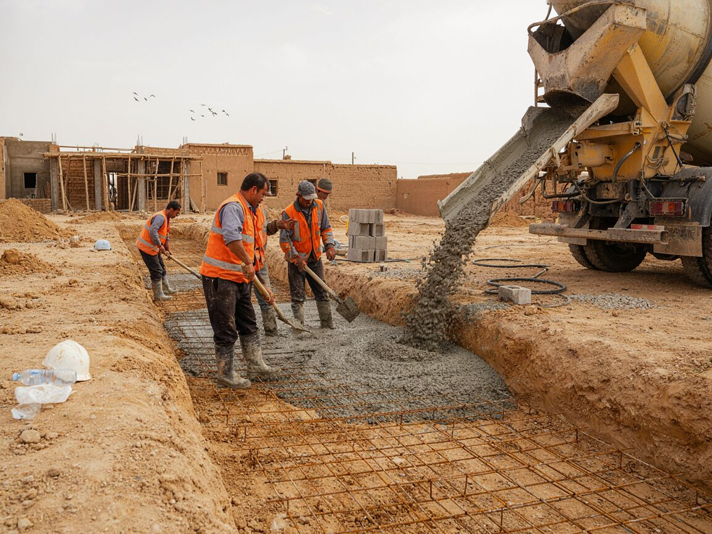
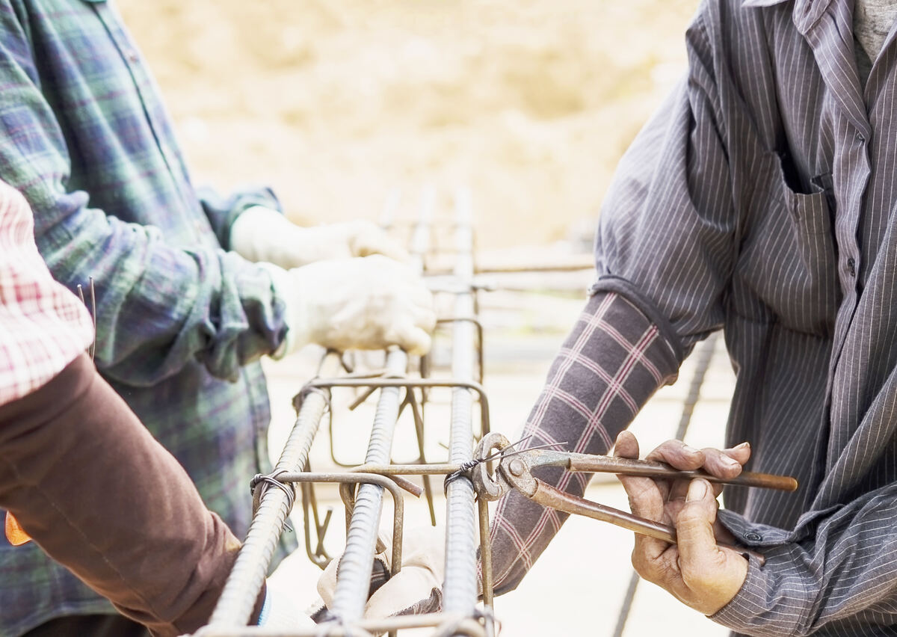
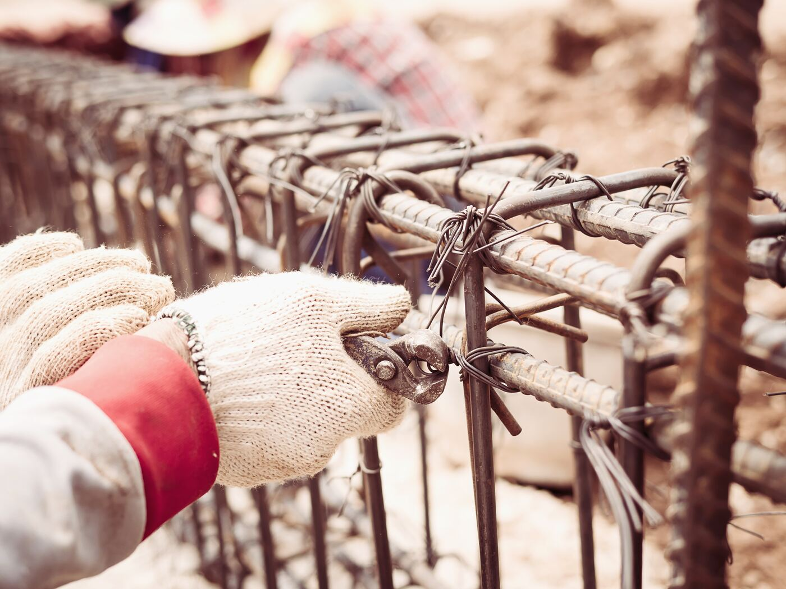
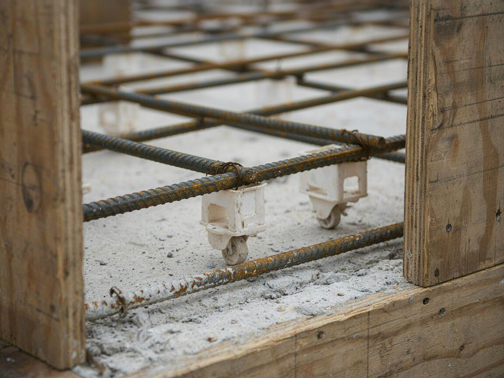
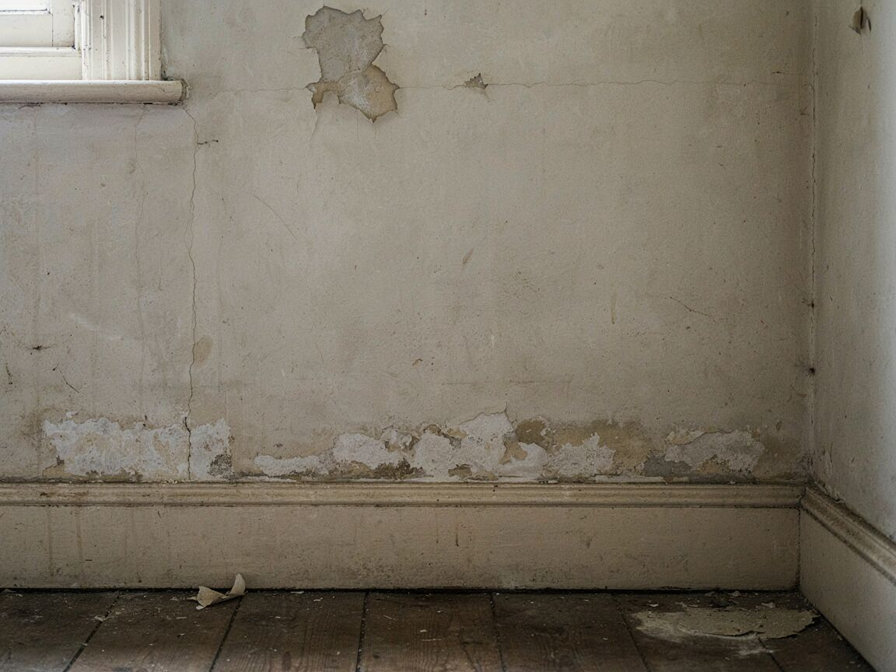
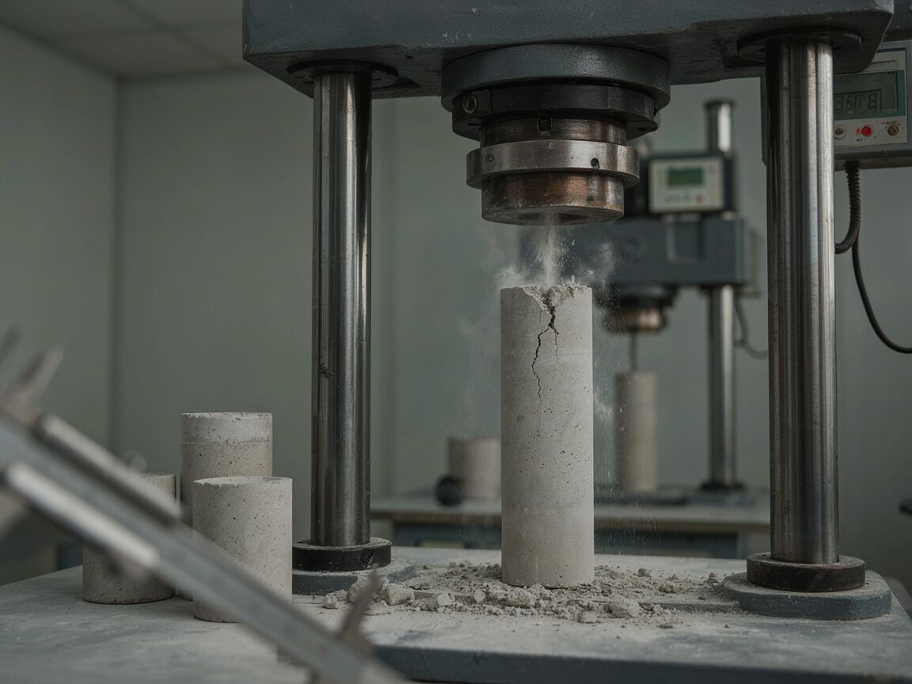

No article matches. See all topics.

Soil study in Morocco: is it mandatory and how much does it cost?
What a geotechnical study reveals, when to commission it, how much it costs for a villa, and why it is one of the most cost-effective expenses on a building project.
Read the article →
Seismic code RPS 2011 in Morocco: what it means for your house
Seismic zoning, design rules, ring beams and reinforcement: what the seismic code actually requires of a villa or a riad in Morocco.
Read the article →
Concrete mix ratios: foundations, slabs, columns and blinding
How much cement per m³ depending on the element, what goes into a cubic metre of concrete, and the site mistakes that rob concrete of its strength.
Read the article →
Cost of a concrete swimming pool in Morocco in 2026
Price per m² of pool, worked examples, what quotes do not always include and why a reinforced concrete pool is designed like a structure.
Read the article →
Cracks in a house: causes, severity and when to worry
How to read a crack (width, pattern, progression), tell surface damage from structural damage, and the right steps before filling it.
Read the article →
Adding a floor to your house in Morocco: feasibility and steps
Before adding a floor: what planning rules allow, what the existing structure can carry, the permit, and the possible strengthening works.
Read the article →
Flat roof waterproofing in Morocco: solutions and price per m²
Bitumen, liquid or PVC membrane: compare waterproofing solutions, their prices per m², and the details that prevent leaks.
Read the article →
Which foundation type to choose: footings, raft or piles?
You do not pick a foundation type from a catalogue: it follows from the bearing capacity of the soil, the depth of the good soil and the loads of your building.
Read the article →
Pad or strip footing dimensions: how to calculate them
The size of a footing follows from a calculation that is simple in principle: the load it receives divided by what the soil can bear. The rest is a matter of reinforcement and detailing.
Read the article →
Tie beams: what are they for and how are they sized?
Invisible once the ground slab is poured, tie beams are nevertheless a key element of a house's seismic resistance: they stop the foundations from moving independently of one another.
Read the article →
Horizontal and vertical ring beams: role and rules in Morocco
Ring beams and ties encircle masonry walls and connect them to the floors. In a seismic region like Marrakech, they make the difference between a wall that cracks and a wall that collapses.
Read the article →
Minimum size of a reinforced concrete column under the RPS
The 20 × 20 cm column still seen on some sites does not comply with the seismic code. Here is what the RPS requires and what remains to be calculated.
Read the article →
Hollow-block floor or solid slab: which one for your house?
The hollow-block floor is the most widespread solution for villas in Morocco, but the solid slab remains essential in certain cases. Here are the criteria to decide.
Read the article →
Reinforced concrete beam: what downstand for what span?
The downstand of a beam is often a topic of discussion between architect, client and engineer. Here are the orders of magnitude and the real room for manoeuvre.
Read the article →
Concrete cover to reinforcement: what values should you respect?
Cover is the thickness of concrete between the steel and the surface. A few millimetres less are enough to make the reinforcement rust and the concrete spall within a few years.
Read the article →
Checking reinforcement before pouring: the site checklist
Once the concrete is poured, it is too late: the reinforcement becomes invisible. The inspection before pouring is when the real strength of your structure is decided.
Read the article →
Curing concrete in hot weather: best practice in Marrakech
When it is over 40 °C in Marrakech, poorly protected concrete can lose a significant part of its strength and become covered in cracks within a few hours.
Read the article →
Formwork striking times for slabs, beams and columns
Striking formwork too early is one of the classic causes of excessive deflection, cracking and even collapse. Here are the times to respect depending on the element and conditions.
Read the article →
Opening or removing a load-bearing wall: steps, risks and design
Enlarging a living room or creating a wide opening by removing a load-bearing wall is possible, provided the loads are transferred correctly. What you need to know before demolishing.
Read the article →
Building expansion joints: when are they needed and how often?
A concrete building expands in the heat and contracts in the cold. Beyond a certain length, it must be split into independent blocks to avoid cracking.
Read the article →
Retaining wall: design, drainage and mistakes to avoid
A retaining wall holds back tonnes of soil and often water. Poorly designed or poorly drained, it tips over or cracks: it is a structure that must be designed by calculation.
Read the article →
Rising damp in walls: causes and how to treat it for good
Damp at the base of walls, tide marks, saltpetre: rising damp is common in old houses and riads. How to recognise it and treat it for the long term.
Read the article →
HA FeE500 rebar: diameters, cross-sections and weight per metre
To read a reinforcement drawing, estimate a steel order or check an invoice, you need to know the cross-section and weight per metre of each bar diameter.
Read the article →
Concrete classes B25, C25/30, C30/37: what do they mean?
On drawings and in specifications, concrete is designated by a strength class. Knowing how to read it lets you order the right concrete and check what is delivered.
Read the article →
Underpinning foundations: when is it needed and how is it done?
Strengthening or deepening the foundations of an existing building without demolishing it is possible. It is a delicate operation that must be carefully designed and supervised.
Read the article →
Basements: tanking, waterproofing and water ingress
A basement that lets in water is one of the most expensive defects to put right. Protection is decided at the design stage, according to the water present in the ground.
Read the article →Need a study for your project?
SIGMA ICC carries out engineering studies and site supervision in Marrakech and across Morocco.